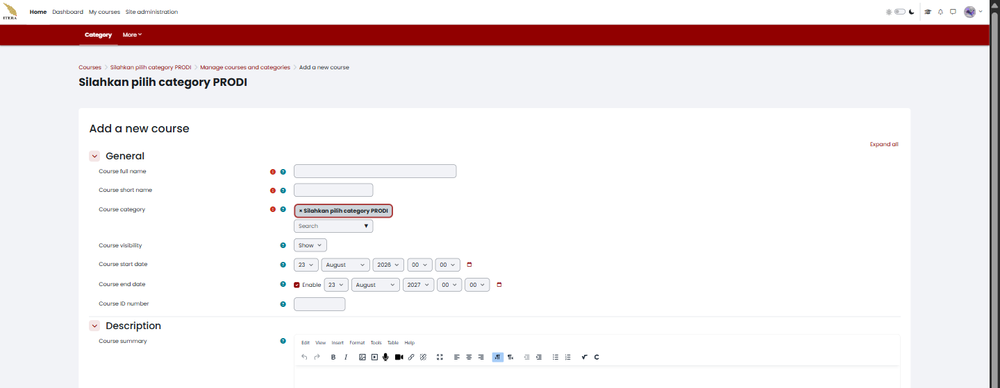
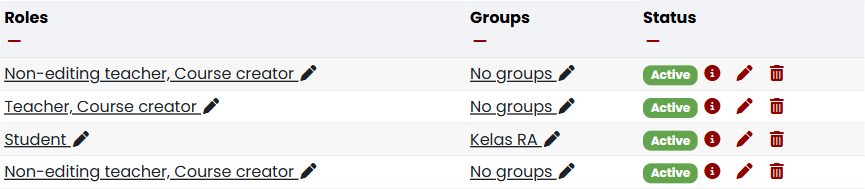

2 Membuat dan Membuka Mata Kuliah
Di New E-Learning ITERA, satu mata kuliah sama dengan satu course Moodle. Bab ini menjelaskan cara membuat mata kuliah sendiri, membukanya, dan mengenali setiap menu yang tersedia di dalamnya sebelum Anda mulai mengisi bahan ajar.
2.1 Membuat mata kuliah baru
Sebelum Anda mengelola sebuah mata kuliah, pastikan mata kuliahnya sudah ada. Setiap dosen dapat membuatnya sendiri tanpa perlu menunggu dibuatkan admin LMS atau pengelola prodi, selama akun Anda berperan Course creator. Buka My courses, lalu ikuti langkah berikut:
- Kalau mata kuliah Anda belum terdaftar di sana, pilih Create course pada blok Course overview.
- Isi formulir Add a new course (Gambar 2.1): Course full name (nama lengkap mata kuliah), Course short name (format
PRODI##-#####, misalnyaPL25-12001), Course category, Course visibility, serta Course start date dan Course end date sesuai semester berjalan. - Pilih Save and display di bagian bawah formulir untuk menyimpan dan langsung membuka mata kuliahnya.

Kategori Bawaan Bukan Program Studi Anda
Bidang Course category terisi otomatis dengan tag “Silahkan pilih category PRODI”. Tag itu adalah pengingat, bukan kategori sungguhan. Ganti dengan mengetik nama program studi Anda pada kotak pencarian di bawah tag tersebut sebelum menyimpan. Mata kuliah yang tersimpan tanpa penggantian ini akan tersesat di kategori yang salah dan sulit ditemukan mahasiswa maupun pengelola prodi.
Jika tombol Create course tidak muncul, akun Anda tidak berperan Course creator pada kategori mana pun — mintalah pengelola prodi membuatkan mata kuliahnya atau menambahkan peran tersebut. Jika mata kuliah tersimpan tetapi tidak muncul di My courses, periksa penyaring daftar seperti dijelaskan pada Bagian 1.2.1 sebelum membuat mata kuliah kedua yang isinya sama.
2.1.1 Pengaturan lanjutan pada formulir
Formulir Add a new course juga memuat beberapa kelompok pengaturan lanjutan yang terlipat secara bawaan. Anda tidak wajib mengubahnya saat membuat mata kuliah — nilai bawaannya sudah layak pakai — tetapi kenali maksudnya karena pengaturan yang sama muncul kembali di Settings setelah mata kuliah dibuka.
Course format
| Pengaturan | Maksud |
|---|---|
| Format | Tata letak mata kuliah: Custom sections (bagian dapat diberi judul sendiri, cocok untuk topik berdurasi berbeda-beda), Weekly sections (bagian mengikuti minggu perkuliahan sesuai Course start date), atau Single activity (mata kuliah hanya berisi satu aktivitas). |
| Course layout | Menampilkan seluruh bagian dalam satu halaman yang bisa digulir, atau satu bagian per halaman. |
| Hidden sections | Bagian yang disembunyikan tampil sepenuhnya tersembunyi, atau hanya menampilkan judulnya saja. |
Appearance
| Pengaturan | Maksud |
|---|---|
| Force language | Memaksa antarmuka mata kuliah memakai satu bahasa tertentu, mengabaikan preferensi bahasa pribadi mahasiswa. |
| Number of announcements | Jumlah pengumuman terbaru dari forum Announcements yang tampil di blok Latest announcements. Isi 0 jika mata kuliah tidak memakai forum pengumuman. |
| Show gradebook to students | Menentukan apakah mahasiswa melihat tautan Grades. Nonaktifkan jika mata kuliah tidak memakai aktivitas yang dinilai. |
| Show activity reports | Menentukan apakah mahasiswa dapat melihat laporan aktivitas mereka sendiri. |
Files and uploads
| Pengaturan | Maksud |
|---|---|
| Maximum upload size | Ukuran berkas terbesar yang boleh diunggah mahasiswa ke mata kuliah ini, dibatasi juga oleh batas yang ditetapkan admin situs. |
Completion tracking
| Pengaturan | Maksud |
|---|---|
| Enable completion tracking | Mengaktifkan pelacakan penyelesaian aktivitas (Activity completion) di tingkat mata kuliah. Wajib aktif lebih dulu sebelum syarat penyelesaian mata kuliah (Course completion) dapat diatur. |
Groups
| Pengaturan | Maksud |
|---|---|
| Group mode | Mode kelompok bawaan untuk seluruh aktivitas di mata kuliah ini — No groups, Separate groups, atau Visible groups (lihat Bab 3). |
| Force | Kalau diaktifkan, mode kelompok tingkat mata kuliah berlaku untuk semua aktivitas dan mengesampingkan pengaturan mode kelompok pada aktivitas tertentu. |
| Default grouping | Grouping bawaan yang dipakai aktivitas dan bahan ajar baru, kalau fitur grouping dipakai. |
Tags
| Pengaturan | Maksud |
|---|---|
| Course tags | Label pencarian yang membantu mata kuliah ini ditemukan lewat fitur pencarian mata kuliah. |
2.2 Membuka mata kuliah
Anda memerlukan mata kuliah yang sudah terdaftar pada My courses. Buka My courses, lalu ikuti langkah berikut:
- Pilih mata kuliah yang menjadi tanggung jawab Anda.
- Periksa nama mata kuliah pada judul halaman sebelum melakukan tindakan apa pun — dua mata kuliah dengan nama mirip mudah tertukar, terutama pada kelas paralel.
- Amati menu mata kuliah yang tersedia di bawah menu navigasi situs, lalu kenali isinya lewat Bagian 2.3 sebelum mengubah apa pun.
- Baru setelah itu, nyalakan togel Edit mode di kanan atas kalau Anda memang perlu mengubah isi mata kuliah. Menyalakannya menambahkan tombol sunting di setiap section dan aktivitas; mematikannya mengembalikan tampilan seperti yang dilihat mahasiswa.
- Baca peran Anda sendiri di mata kuliah ini alih-alih menebaknya. Buka Participants, cari nama Anda, lalu baca kolom Roles (Gambar 2.2). Kolom ini bisa menampilkan lebih dari satu peran sekaligus, misalnya Teacher, Course creator atau Non-editing teacher, Course creator.

Menu New E-Learning ITERA mengikuti peran yang tercatat di kolom itu. Reports, misalnya, tersedia bagi Teacher maupun Non-editing teacher, tetapi togel Edit mode hanya muncul bagi akun yang berperan Teacher. Kalau Anda tidak melihat togel itu sama sekali, itu tandanya akun Anda berperan Non-editing teacher pada mata kuliah tersebut, bukan tanda bahwa mata kuliah atau akun Anda rusak.
Penanganan Perbedaan Tampilan Hak Akses
- Jika mata kuliah tidak muncul di My courses meski Anda yakin sudah membuatnya, minta pengelola prodi memeriksa kategori dan status enrolment akun Anda.
- Jika kolom Roles hanya menampilkan Non-editing teacher tanpa kewenangan menyunting yang Anda perlukan, hubungi dosen pengampu utama atau pengelola prodi alih-alih mencoba mengakalinya lewat Site administration.